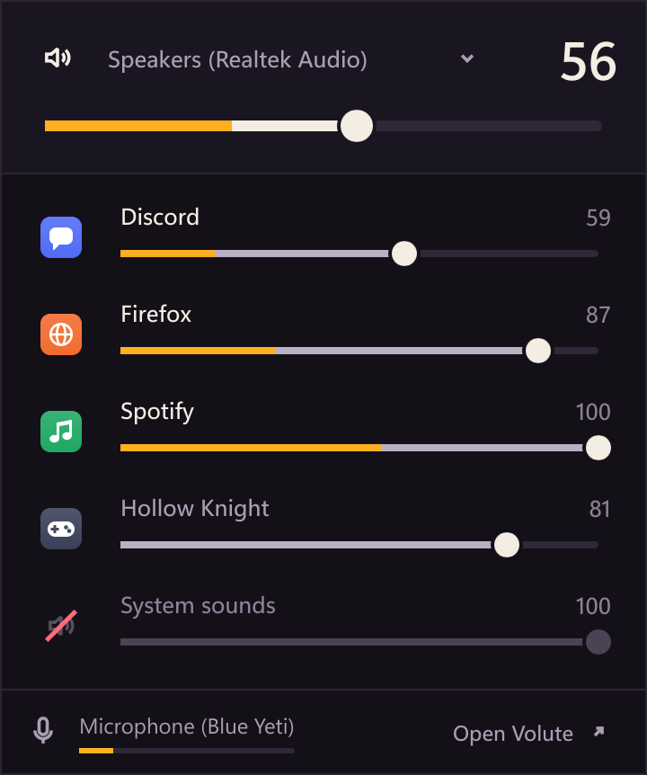
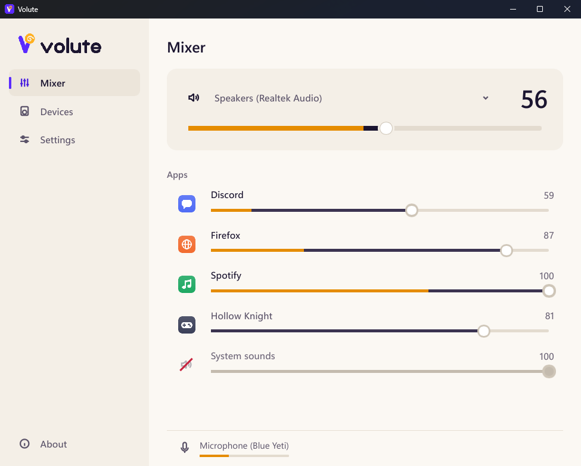

Every app, with its level
Each app's real name and icon, its volume and what it plays, live. The processes of one app make one line.
Volute is a volume mixer for Windows. Every app's volume and live level, every output and every microphone, one click from the notification area. The rest of the time, you forget it is there.
Windows 10 and 11 · free and open source (MIT) · no administrator rights

Try it
Each app has its line. The fader sets its volume, the amber level shows what it plays, live, and a click on its icon mutes it. System sounds stay apart, and an app that went quiet fades away after a minute.
Drag, or use the arrow keys. Click an icon to mute.
What Windows does not do
Windows' own is four clicks deep, shows no levels and forgets your apps. Volute lives in the notification area and gets to the point.
Each app's real name and icon, its volume and what it plays, live. The processes of one app make one line.
Headphones, speakers, monitor: pick the output at the top of the mixer, and Volute makes it the default for all of Windows.
The volume you give an app in Volute comes back the next time it plays. The wheel over the icon sets the master volume.

What it costs
Rust and Slint, with no embedded browser and no runtime to install. Volute sleeps while nothing moves: Windows wakes it when a volume changes.
Measured with cargo xtask bench-overhead on the author's machine. With the mixer open and the meters moving: 2 to 4 % of one core. The figures and the method are in the architecture document.
What it reads
A mixer sees a lot go by. Here is exactly what Volute does with it.
Next
Volute is young. The mixer is here; this is what follows, in order.
Volute handles them, with its own on-screen display, legible and animated. A modifier sets the app in the foreground instead.
Sets of volumes and outputs, applied in one click or with a shortcut: "Work", "Game", "Call".
Music on the speakers, the call in the headset, without a trip to Settings.
Questions
Yes, and open source under the MIT licence. No paid version, no account, no ads.
No. Volute installs in your user folder, and everything it does works with a standard account: app and device volumes, the default output.
Volute checks GitHub at start and every 6 hours. When a version is out, it tells you; one click downloads it, checks its signature and SHA-256, installs it without a window, and Volute starts again. You can turn the check off in Settings.
The executables are not code-signed yet, so SmartScreen may warn on first run. Each release's SHA256SUMS lets you check what you downloaded.
Windows measures a microphone's level only while an app uses it. Volute never opens the microphone itself, so Windows' "microphone in use" indicator does not light up for nothing.
From Windows Settings, Apps, like any app. Your settings stay in %APPDATA%\Volute; delete that folder to remove them too.
Install Volute for your account in a few seconds. It keeps itself up to date.
Installer or portable copy · Windows 10 and 11, 64-bit